Композиционные схемы предметов мебели.

Конструктивно столярные изделия делят на каркасные, щитовые и каркасно-щитовые. Каркасные собирают из брусков или нешироких досок, составляющих несущий скелет изделия. Все плоскости представляют собой вставки между деталями каркаса и никакой нагрузки не несут. Наглядный пример каркасного изделия – филенчатая дверь, представляющая собой раму из брусков, в которую вставлены плоскости – филенки. Каркас выступает наружу, он виден и поэтому требует декоративной обработки. Каркасные изделия, как правило, неразъемные, бруски основы в них соединены клеем накрепко.
Щитовое изделие собирают из щитов – деревянных плоскостей, облицованных с лицевой стороны декоративным шпоном и соединенных между собой с помощью шкантов, брусков или металлических скреп. К щитовым изделиям относится большинство современных шкафов. Щитовые изделия могут быть разобраны на детали и поэтому удобны для перевозки.
Щитовые изделия представляют собой пространственную структуру, жесткость которой основана на работе взаимно перпендикулярных сторон.
Каркасно-щитовые изделия состоят из несущих каркасных рамок и навешенных на них щитов. Как правило, рамки и щиты соединяются в перпендикулярных плоскостях, что обеспечивает жесткость изделия. К каркасно-щитовым изделиям относятся табуреты, большинство столов и др. Каркасные части таких изделий, как правило, неразъемные, а щиты от каркаса отделять можно.
Производство и проектирование массовой мебели определяются «Типажом бытовой мебели», в основу которого положены функциональные и конструктивно-технологические признаки.
Композиционные схемы предметов мебели представлены структурно, без деталей креплений и соединительных скрытых узлов, так что при одной и той же структуре тип соединений и их конструкция могут быть различными. На форму деталей и выразительность предмета это не влияет, за исключением тех случаев, когда выступающие на лицевую поверхность стяжные металлические детали образовывают дополнительные украшения предмета. К таким деталям относятся заглушки гнезд, в которых скрыты головки болтов, или декоративно обработанные головки самих болтов. В композиционных группах рассматриваются предметы столярной работы, в которых дерево составляют основу их структуры.
Стулья, кресла, табуреты. Табуреты, стулья, кресла вместе с диванами и скамейками составляют композиционную группу, которые по функциональному признаку объединяют как предметы, предназначенные для сидения.
Табурет с вставными ножками представляет собой толстый щиток сиденья, в который ввернуты или вставлены ножки. В зависимости от формы щитка определяется количество ножек. В треугольном щитке делают три ножки, в четырехугольном – четыре, в шестиугольном – шесть. В круглом табурете может быть и большее количество ножек, а также одна с развитой внизу опорой. В этой композиционной схеме табурета главная конструктивная деталь, обеспечивающая прочность, – сидение.
Табурет может представлять собой совокупность каркаса ножек, состоящего из стоек той или иной конфигурации, соединенных между собой горизонтальными элементами, и прикрепленного к нему сиденья. Количество ножек соответствует форме сидения. Так как каркас является несущей частью табурета, сидение может быть относительно тонким или мягким. В щитовом табурете вертикальные опорные элементы и сидения собраны из щитков, связанных между собой по взаимно перпендикулярным плоскостям. Вертикальные щиты могут иметь прорези различной формы. Наименьшее количество щитков в табурете – три при диагональном расположении двух вертикальных пересекающихся щитков, покрытых крышкой.
По таким же композиционным схемам построены скамьи: вставные ножки и прочное толстое сиденье; опорный каркас и относительно тонкое сиденье; щитовая конструкция, в которой щиты соединяются под прямыми углами для обеспечения жесткости.
(иллюстрация отсутствует)
Рис. 44. Композиционная схема табуретов (а, б, д, е) и скамей (в, г, ж)
В монументальных скамьях композиция представляет собой ящик (иногда с откидной крышкой). Передняя стенка ящика служит полем для украшения.
Как в скамье, так и в табурете основные элементы, подвергаемые художественной обработке, – это ножки, борта, сидения и царги. К переходной форме относятся скамьи с украшенной тем или иным образом спинкой, укрепленной на боковинах или заднем бруске сиденья.
Схемы стульев отличаются большим разнообразием. Самый простой стул образуется из табурета, в котором наряду со вставными ножками есть также вставная спинка. Так как стулья бывают обычно четырехугольной формы (в плане), то у них, соответственно, четыре ножки или одна центральная, опирающаяся на четырехстороннее разветвление. Поэтому, если в стуле парные ножки заменены щитком, то он должен быть раздвоен в нижней части, чтобы пола всегда касались четыре опоры. Несмотря на примитивную схему при продуманной форме сидения, рационально подобранных ножках и спинке такие стулья довольно-таки выразительны. Такая композиционная схема распространена до сих пор, ее несомненные художественные достоинства основаны на использовании цельного дерева. Наибольшая художественная нагрузка падает на спинку и ножки. Стулья с вколотными ножками и спинкой должны быть целиком деревянными. Всякая обивка в этой композиционной схеме будет ложной. Подобным образом строится кресло с вставными ножками и вставной спинкой. Развивая композицию спинки такого стула по ширине так, чтобы она загнулась на бока сиденья, можно получить композицию кресла, в котором спинка состоит из ряда вставных стоек, объединенных сверху изогнутой обвязкой.
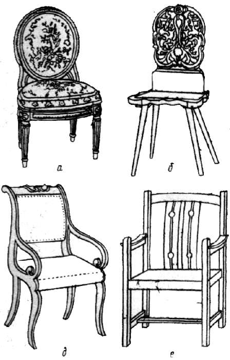
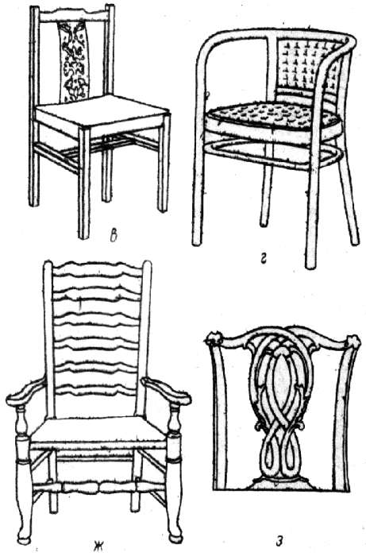
Рис. 45. Композиционная схема стульев и кресел: а – мягкий каркасный стул с низкой спинкой; б – стул с вколотными ножками и спинной; в – каркасный стул с расписным средником спинки; г – гнутый каркасный стул-кресло; д – кресло со щитовыми вырезными боковинами; е – каркасное кресло со средней спинкой; ж – каркасное кресло из точеных деталей с высокой спинкой; з – спинка с прорезным средником
Основная художественная нагрузка в этой композиционной схеме кресла приходится на спинку, меньшая часть – на ножки. Стул и кресло с плоскими несущими боковинами образованы либо вырезными щитками, либо плоской рамкой с перекладинами. К боковинам прикреплены поперечины, на которые крепят сидение и спинку стула. В плане боковины представляют собой узкую полоску. В сечении ножки – прямоугольники, вытянутые по глубине стула. Между боковинами можно вставлять как деревянные, так и мягкие сидения и спинку, а также жесткую деревянную спинку при мягком сидении. В креслах и диванах этой схемы развитая боковина имеет подлокотники.
Мебель начала XIX в. в России в стиле ампир почти вся построена по описанной схеме. Наибольшей обработке подвергались спинка и подлокотники.
Если есть обивка, надо правильно оценивать ее художественную значимость. Скромная обивка позволяет лучше выделить декоративную обработку деревянных частей. А например, штофная обивка требует увеличения декоративности в обработке ножек и обрамлений.
Каркасная конструктивная схема стула и кресла получила наибольшее распространение, так как дает возможность разнообразить форму. Сущность каркасной схемы состоит в том, что все элементы стула (передние и задние ножки, царги, проножки, детали спинки и подлокотников) изготовляют из отдельных брусков, а затем соединяют на клею. Возможность отдельной обработки брусков позволяет подвергать их различной обработке: резьбе, выгибам, точению.
Детали каркасного стула можно разделить на прямолинейные и вырезные, меняющие свое сечение по длине. Вырезные криволинейные детали выполняют из цельного дерева, что повышает ценность вещи. Стулья и кресла с деталями переменного сечения более художественны. Композиционно каркасная схема дает большое разнообразие типов, из которых выделим следующие.
Стулья и кресла с низкой (поясничной) спинкой. В таких креслах спинка незначительно возвышается над линией подлокотников. Сидящий опирается на спинку верхней частью поясницы. По этой композиционной схеме выполняют рабочие стулья и кресла. Их выразительность заключается в гармоничном соотношении формы, цвета и фактуры деревянных деталей, а также обивки сидения. Украшения в такую композиционную схему вводятся редко.
При выполнении кресла с низкой спинкой важно найти точную изящную форму, чисто и тектонично сделать соединения.
Стулья и кресла с высокой спинкой делят на два подтипа – со спинкой, доходящей до лопаток или плеч сидящего (средняя спинка), и со спинкой, возвышающейся над головой сидящего (очень высокая спинка).
При оценке и выборе композиции стула или кресла следует учитывать, что особо декорируют только видимые спереди и сбоку части стула или кресла. Декоративность этих изделий, качество столярной работы должны быть видны и в том случае, если в нем сидит человек. Поэтому помимо спинки делается акцент на обработку передних ножек и подлокотников, им придают выразительность за счет формы, позолоты, вставок из декоративных деталей и т. д. Если это не требуется, достаточно обработать спинку и передние ножки.
Если есть необходимость создать впечатление особой парадности и представительности, выбирают кресло или стул с очень высокой спинкой. В таком случае декоративные элементы располагают в верхней части спинки.
Отметим, что обработка спинки может быть самой разнообразной: сплошной, с развитой орнаментальной декоративной композицией на плоскости самой спинки (обивка, резьба, маркетри, инкрустация); прорезной, в которой рисунок прорезают в форме отверстий; прозрачной, в которой рисунок образуют детали, размещенные в обвязке спинки. Общий абрис спинки также может варьироваться. Спинка может быть ограничена прямыми линиями, быть криволинейной смешанного построения. Рамку спинки можно собирать из брусков различной формы: от прямых до змееобразных.
В зависимости от декоративной разработки спинки выбирают декор для передней части стула или кресла.
Кроме ножек украшают царги и проножки. При желании развить декоративную обработку царги правильнее сделать ее более широкой, чем вводить проножку в качестве дополнительного элемента.
Столы. Различают столы обеденные, письменные, рабочие, игровые, журнальные и т. д. Широкая плоскость крышки требует развитой опоры не менее чем не четыре точки. Одноногий стол должен иметь четырехстороннее опорное разветвление при развитой по толщине центральной ноге. В таких столах декор помещают на опоре и деталях опоры.
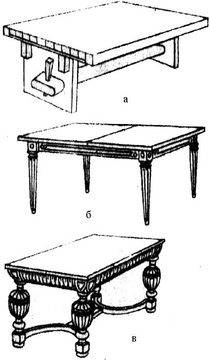
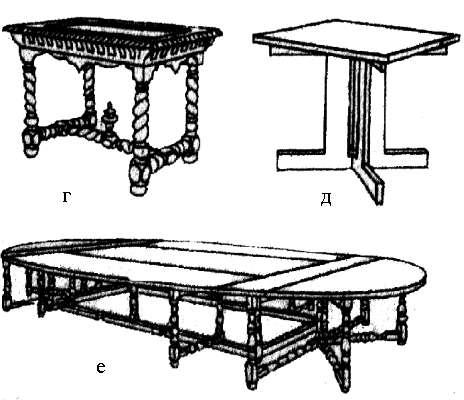
Рис. 46. Схемы обеденных столов: а – двухопорный с клинчатой затяжкой; б – царговый, без проножек; в, г – с проножками разной формы; д – одноногий с развитой центральной опорой; е – банкетный раскладной (сороконожка)
Двухопорные столы представляют щитовую конструкцию. Так как соединение опорных щитов со столешницей не обеспечивает жесткости конструкции, то опоры вверху связывают продольными балками – царгами, а внизу клинчатой проножкой. В крестьянской мебели прошлых веков жесткость соединений обеспечивалась клиньями, пропущенными в проушины концов царг. Стол с двумя опорными щитами должен иметь раздвоение на нижних концах щитов. У двухопорных столов декор обычно помещают на боковых опорных щитках и соединяющих их балках.
Более распространены четырехногие столы. Они представляют собой систему из ножек, прочно связанных поверху царгами, на которые наклеивают верхний щит. Устойчивость и жесткость конструкции обеспечиваются размерами шипов, соединяющих верхнюю часть ножки с царгой. Основная декоративная часть такого стола – ножки. Даже при отсутствии украшений их чаще всего делают переменного сечения. Ножки должны быть тоньше книзу и иметь самую широкую часть вверху.
Заметим, что прочность соединений в верхнем узле для тяжелых столов бывает недостаточной, поэтому вводят проножки или диагональные стяжки. Эта часть стола, даже если его столешница покрыта скатертью, остается видимой. Поэтому нижние связи стола также получают декоративную обработку.
В обеденных столах крышка имеет простую отделку – она облицована шпоном. Не подвергают обработке и борта. Раздвижные столы компонуют в сложенном виде. Столы с опускающимися и откидными ножками компонуют и в сложенном, и в раскрытом виде. К изделиям такого рода относится стол-сороконожка. У него две композиционные схемы: с толстыми основными ножками и тонкими дополнительными; с ножками одинаковой формы и сечения. Большей декоративностью должны обладать ножки и нижние связи, так как в раскладных столах царги обычно скрыты большим свесом столешницы.
Банкетные столы относятся к столам с большой поверхностью. Их делают составными или цельными. Части, составляющие стол, должны образовывать единую композицию. Характерный признак банкетного стола – в середине его ширина больше, чем у торцов. Делается это для того, чтобы сидящий мог видеть большее пространство.
Композиционное построение банкетного стола представляет собой сложную задачу, так как организовать протяженную систему связей и ножек довольно трудно. В качестве одной из схем можно предложить стол с группами толстых ножек по краям и тонкими в середине. Отделка этих столов должна быть простой. Обычно их облицовывают шпоном.
Обязательная принадлежность письменных столов – ящики, размещенные под крышкой в середине и по бокам стола. Письменный стол с расположенными поверх крышки ящиками и бортами называют бюро. Бюро может иметь цилиндрическую или шторную крышку.
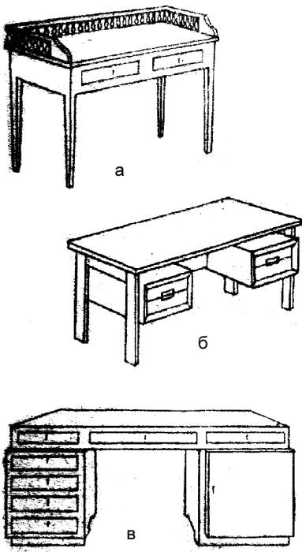
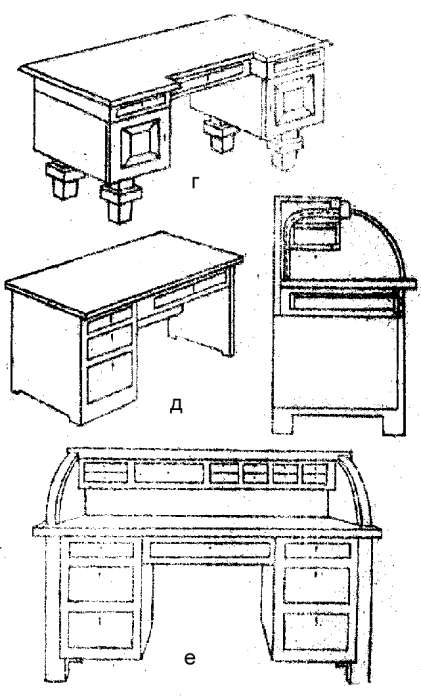
Рис. 47. Схемы письменных столов: а – с ограждением; б – с подвесными ящиками; а – двухтумбовый; г – двухтумбовый на ножнах; д – однотумбовый; е – бюро
Обычно ящики письменного стола собирают в блоки. Если блок ящиков составляет по высоте 65-70 см, они образуют тумбу, которая опирается на пол, на нее в свою очередь опирается столешница. Письменные столы бывают одно– и двухтумбовые. Если блоки ящиков не превышают по высоте 40 см., их либо ставят на ножки по центру блока, либо подвешивают к ножке и крышке сбоку.
Средние ящики помещают над коленями сидящего, под крышкой стола. (При небольшой высоте стола средние ящики не делают.)
При наличии среднего ящика верхнюю часть стола часто делают в виде решетчатой плиты, в которую с одной стороны вставляют ящики. Эту плиту опирают на ножки или тумбы. Крышки письменных столов в отличие от обеденных всегда открыты. Их облицовывают шпоном, а раньше покрывали сукном.
Обычно человек занимает среднюю часть стола, в этом месте ему нужна ровная или слегка вогнутая кромка. Поэтому крышка письменного стола в остальной части может иметь сложную форму с раскреповками, уступами и скруглениями углов.
В плане письменный стол может иметь форму боба, что влечет за собой изменение формы царг и соответственно ящичных блоков.
Наиболее декоративная нагрузка для столов с открытой верхней крышкой приходится на передние и задние стенки ящичных блоков и на ножки. Иногда декоративной обработке подвергают бока и противоположную сторону. Если говорить о верхней плоскости, она требует простой отделки, усложнять ее обработку не следует, так как она обычно закрыта бумагами.
Особенности имеют столики для рукоделия и игральные. Они должны быть небольшими, что подсказывает использовать складные и выдвижные конструкции крышки и опор. Парадное состояние стола для игр – закрытый вид.
Столики для рукоделия могут быть выполнены в форме тумбы с ящиками или высокого табурета с блоком ящиков и шкафчиком.
Шкафы и шкафчики. Конструкция шкафа простая: он состоит из боковин, дверок и задней стенки. Эти детали закреплены между блоками карниза и цоколя. Цокольный блок может быть пространственно-решетчатым, чтобы в него можно было вставить ящики. Обычно декорируют переднюю и в меньшей степени боковые стенки.
Шкаф является доминирующим предметом в мебельном комплекте интерьера, потому именно он может быть композиционной осью всего комплекта. В связи с этим композиция шкафа должна обязательно иметь внутреннее равновесие, возникающее обычно на основе осевой симметрии.
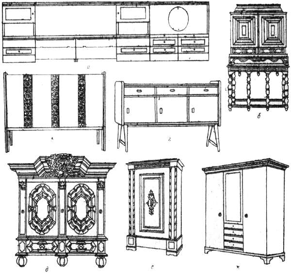
Рис. 48. Шкафы и шкафчики: а – комбинированный уступчатый; б – двухстворчатый на консолях; в – четырехстворчатый плоский; г – шкафчик-тумбочка; д – с развитым карнизом; е – одностворчатый, ж – трехстворчатый
Внешний вид передней стенки шкафа в значительной мере влияет система членений. Она определяется размерами дверок и ящиков. Дверки могут быть расположены в одной плоскости и выступать по отношению одна к другой на некоторую величину. Такой прием обогащает игру светотени и подчеркивает значимость членений.
В шкафах уступчатой формы декоративную нагрузку наиболее целесообразно придавать дверным элементам, а цокольный и карнизный элементы следует подчинять дверным, так как делать в этой композиционной схеме единый общий карнизный или цокольный блок неудобно из-за его висящих частей над углубленными частями шкафа. Ломаный в плане развитый карниз требует проявления высокого мастерства, тонкого чувства ритма и пропорций. Общие, нерасчлененные карнизы, объединяющие внутренние членения нижней части шкафа, выглядят обычно более убедительными.
Украшение плоских шкафов может варьировать от простой плоскостной до сложной с введением рельефа, маркетри, инкрустации, резных вставок и накладок.
В книжных шкафах передняя стенка имеет стекло, обвязка дверок и карниз служат как бы его рамой. Иногда стекло вставляют в декоративно выполненный переплет. Декоративность достигается за счет развития карниза, цоколя и рисунка переплета.
Шкафчик по размеру меньше шкафа, так что его композиционные элементы должны иметь иные пропорции. Маленькая вещь не позволяет большое количество основных членений, поэтому обработка деталей шкафчика не должна быть слишком развитой. Если карниз большого шкафчика может делиться на 5-6 частей по ширине профиля, то карниз шкафчика – не более чем на 2-3 части. Шкафчики обычно имеют одну дверку, поэтому на их поверхности целесообразен мелкий рисунок.
Буфеты, серванты и горки. Буфет представляет собой шкаф для хранения посуды, столового белья, закусок, напитков. Композиционная схема его выглядит так: внизу расположен глухой шкаф, сверху – полки, закрытые застекленными дверками.
Как правило, буфеты имеют двойные дверки и при симметричном решении каждой из них – две оси. Их композиционная схема состоит из двух частей, поэтому для композиции буфета большое значение приобретают объединяющие детали – карниз, ящичный блок, цоколь. Для большей цельности композиции с боковых сторон буфетов вводят детали, подчеркивающие общую центральную ось, – колонки и консоли, которые располагают в передних углах ниш. Декоративная нагрузка в композиционной схеме буфетов приходится на дверки и элементы, объединяющие композицию.
Для создания рабочей зоны между верхним и нижним шкафами оставляют нишу.
Сервант – это низкий буфет для хранения посуды и столового белья, хозяйственная ниша в нем отсутствует. Верхний шкаф стоит непосредственно на нижнем или может отсутствовать.
Буфет, будучи высоким, требует оси симметрии. Несимметричные буфеты кажутся неуравновешенными. Сервант низкий, он не выделяется как доминирующий самостоятельный элемент и легко присоединяется к низкой мебели – кровати, тахте, обеденному столу. По этой причине сервант может быть и асимметричным.
Сервантам характерна значительно более богатая разработка верхней части при относительно простом основании. В двухпольном серванте необходимо нейтральное решение дверок, чтобы избежать появления разъединяющих осей.
Нередко в низких сервантах вместо крышки ставят плиты из мрамора, которые служат объединяющей деталью.
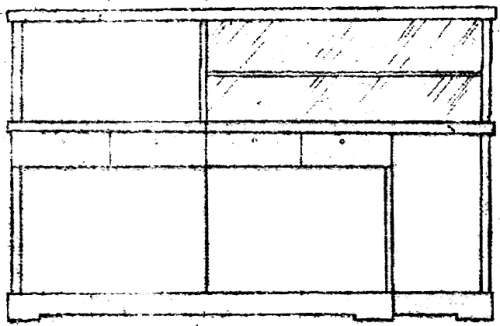
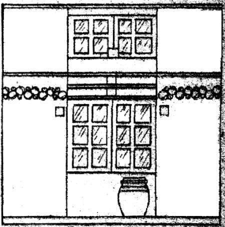
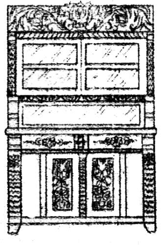
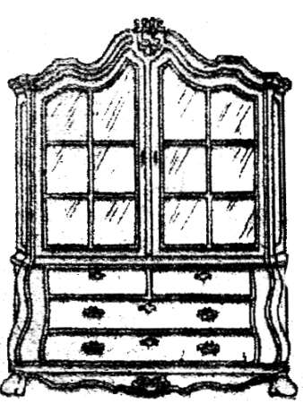
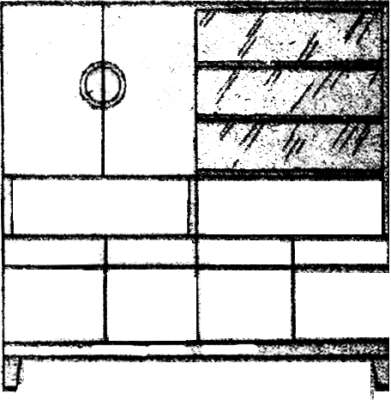
Рис. 49. Схемы буфетов, сервантов и горок: а – сервант щитовой конструкции; б – буфет-сервант без ниши; в – буфет-поставец; г – горка с ящиками внизу; д – шкаф для посуды
Горка – это застекленный шкаф со стеклянными полками для хранения красивой посуды или иной ценной утвари. Горка не представляет собой выразительного замкнутого объема, поэтому ее композиционная схема может быть нейтральной, т.е. без подчеркивания оси симметрии. Иногда горки проектируют и для постановки в углу.
По структуре горки представляют собой совокупность рам со стеклами. Для сохранения композиционной цельности изделия обычно вводят довольно массивное основание. Однако встречается схема горки на тонких ножках, придающих ей легкость. Достоинства того или иного решения горки определяются пропорциональностью контура рам, соотношением ширины и толщины обвязок с промежутками, в которые вставлены стекла, и качеством древесины. Чрезмерно декорированная горка перестает быть оформлением коллекции и превращается в композиционно самостоятельный стеклянный шкаф.
Комоды и секретеры. Комод состоит из основы со щитовыми боками и рамного ящика, в который с передней стороны вставлены плоские ящики попарно в ряду или по ширине комода. Декоративные элементы помещают на передних стенках ящиков, передних углах основы и бортах крышки. Выразительность этих мебельных изделий достигается не только использованием плоскостных декоративных элементов, но изгибом передней стенки ящика по цилиндрической поверхности.
Секретер – это вид письменного стола, устроенного на основе комода или шкафа с выдвижной или откидной доской для письма и ящиками для бумаг. Чаще секретер компонуется из комода, на верхней крышке которого устраивается выдвижная доска, закрываемая наклонной или цилиндрической задвигаемой крышкой. Под крышкой находится письменный набор, состоящий из мелких ящиков и шкафчиков, сверху иногда надстраивается застекленный книжный шкаф с одной или двумя полками. Крышка задвигается так, что письменный набор виден под ней и зрительно не разрушает композицию. Обычно такой шкаф имеет завершающие и объединяющие карнизные детали.
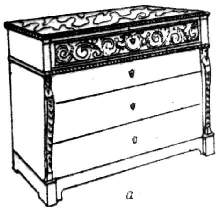
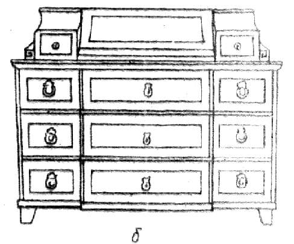
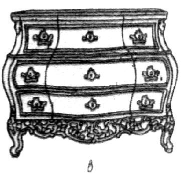
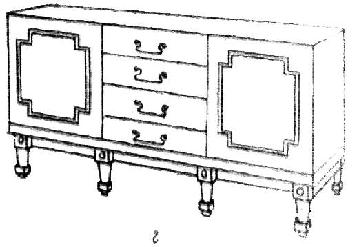
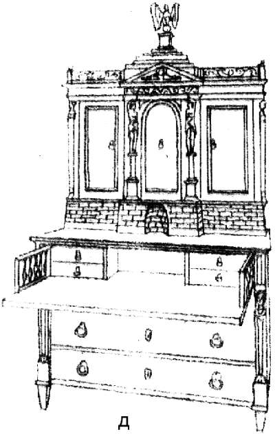
Рис. 50. Схемы комодов: а – с мраморной доской; б – с бюро; в – фигурный на ножках; г – комод-сервант; д – с секретером и шкафчиком
Требования к композиции секретера – гармоничная взаимосвязь крупных элементов и их максимально тесная взаимосвязь с мелкими.
Стеллажи и шкафные стенки. Стеллажи и стенки делают чаще всего встроенными, поэтому композиция стеллажей и стенок тесно связана с общей композицией интерьера.
Структурно стенка или стеллаж состоят из приставленных к стене поперечных стоек, лесенок или щитов, на которые навешивают дверки. На поперечинах устанавливают полки. Шкафные стенки можно собирать из шкафов-блоков, составляемых в ряд. Задача состоит в том, чтобы систему плоскостей, образуемых дверками, и систему ниш, образуемых полками, привести в уравновешенное состояние, обеспечив сохранение главного композиционного элемента и подчиненность ему окружающих. А центром композиции здесь может быть, например, встроенный шкаф. Его можно застеклить, ввести резьбу, роспись, декоративные накладки. Стенка должна создавать впечатление устойчивости и надежности. Поскольку стенки занимают значительную площадь, в них может быть встроена и кровать, и письменный стол, и платяной шкаф, и полки для книг, посуды.
Впечатление, производимое шкафной стенкой, тесно связано с умелым использованием законов композиции, учитывающих правила переходов, законченность, внутреннее равновесие.
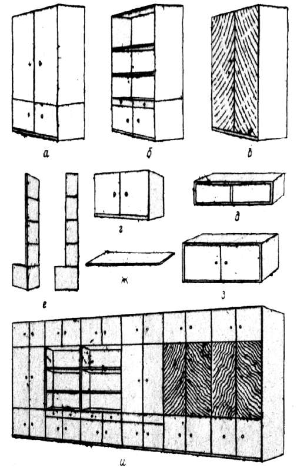
Рис. 51. Схемы устройства стеллажей и шкафных стенок: а – д, з – блочные элементы стенок; е – несущие щиты; ж – полка вставная; и – стенка в сборе
Кровати, кушетки. Эти предметы мебели предназначены для лежания. Структурную основу деревянной кровати составляют два торцевых щита с продольными досками – царгами, несущими мягкий матрац и покрытие. Основная композиционная нагрузка приходится на торцевые щиты, из которых один (головной) часто делают более высоким.
Обработка щита может быть плоскостной за счет декоративной выклейки или сплошной резьбы, контурной за счет изысканной формы обрамляющего бруса или прорезной за счет формы отверстий в плоскости щита. Уместно сочетание нескольких приемов.
В современных деревянных кроватях царги декоративной обработки обычно не получают.
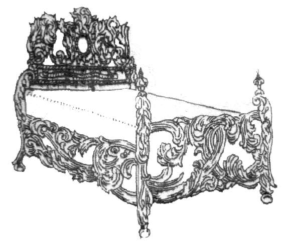
а)
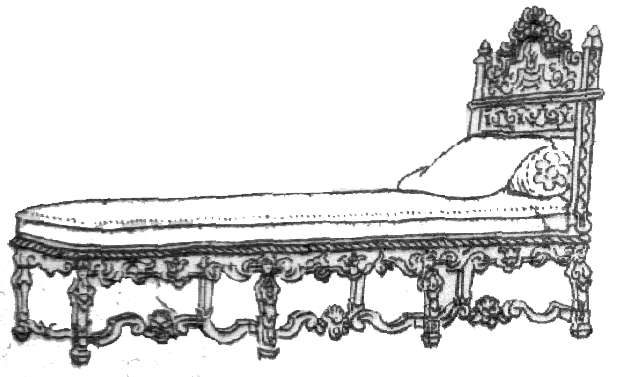
б)
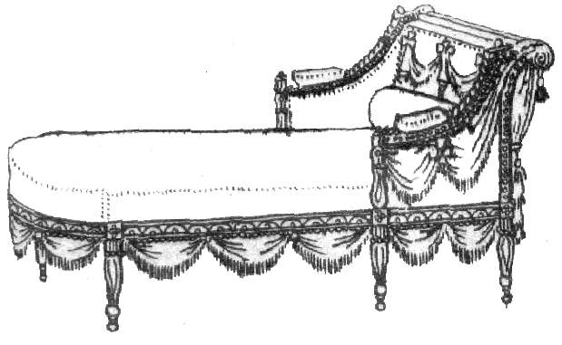
г)
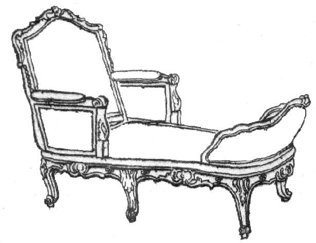
д)
Рис. 52. Схемы предметов мебели для лежания: а – кровать с разновысокими спинками; б – кровать с одинарной спинкой; в – кровать с одинаковыми спинками (рис. отсутствует); г – кушетка; д – шезлонг; е – канапе (рис. отсутствует)
Кушетка – предмет мебели с односторонним подголовником либо в виде подушки треугольного сечения с деревянными боковинами, либо в виде невысокого торцевого борта, завернутого на треть продольной стороны.
В кушетках композиционное решение основано на выявлении несущего деревянного каркаса, обрамляющего полумягкое заполнение с матерчатой обивкой.
Тумбочки, зеркала, полки. Тумбочка – это небольшой невысокий шкафчик, который обычно ставят у кровати. Декор располагают на передней стенке или крышке.
Зеркала бывают навесными обрамленными и напольными, опирающимися на подставку. Рамы делают из древесины ценных пород и отделывают.
Трельяж (трехстворчатое зеркало) композиционно распадается на две самостоятельные части – собственно зеркало и нижний столик. При компоновке зеркала с подстольем необходима рама, композиционно увязывающая две части предмета в единое целое.
Полки – доски, горизонтально укрепленные на стене и предназначенные для посуды, книг и т. п. По структуре полки представляют собой деревянные видимые с торца плоскости, опирающиеся на те или иные несущие элементы в виде кронштейнов, боковых щитков или опор-растяжек. Полки, расположенные одна над другой и опирающиеся на стойки, называют этажерками.
Декоративной обработке подвергают опорные детали и борта полок. Если полка имеет задник, то декорируют задник, который может стать главным элементом композиции.
Мебельная фурнитура. В композиции мебельных предметов фурнитура играет заметную роль. В видимых и выходящих на лицевую поверхность деталях предметов мебели она участвует в композиции так же, как и украшение, причем сила ее выразительности будет тем большей, чем качественнее материал, из которого она изготовлена, и чем сложнее работа.
Декоративное использование фурнитуры в мебели тесно связано с развитием прикладного кузнечно-слесарного мастерства. Высокое качество фурнитурных изделий эпохи позднего средневековья, ренессанса, модерна наглядно подтверждает эту высказывание. Когда слесарно-кузнечное мастерство приходило в упадок, столяры переходили на изготовление потайных петель пяточного или многошарнирного типа. Петли, ключевины, ручки и замки, выполненные из цветных металлов, делают предмет мебели выразительнее, чем фурнитура, выполненная из черного металла, а литые или кованые детали значительно интереснее штампованных.
Степень выразительности фурнитуры зависит от решения самого предмета: его поверхности, материала и общего композиционного строя. В изделиях, сделанных на высоком уровне, фурнитура должна подчеркивать этот уровень, а не брать часть декоративности на себя. Поэтому наиболее уместными выглядят детали из гладкого цветного литья.
Наибольшую выразительность имеют петли, затем ключевины и ручки. Желательно объединять ручки с ключевинами, так на как раздельное их расположение делает предмет менее гармоничным.
Умение проектировать фурнитуру так же важно, как и умение выполнять декоративную часть предмета. Необходимо учитывать, что распространение пленок, имитирующих шпон, применение древесностружечных плит и в связи с этим отсутствие видимых торцевых срезов делают предмет бедным, тогда фурнитура может сыграть основную роль в декоративном обогащении предмета мебели.
Когда фурнитура помещена на передней стенке предмета, положение петель, ручек и ключевин должно быть гармонично организовано и учтено – соразмерность ручей и дверок, соотношение материала фурнитуры и дерева, расстояние от краев дверки до петель и др.